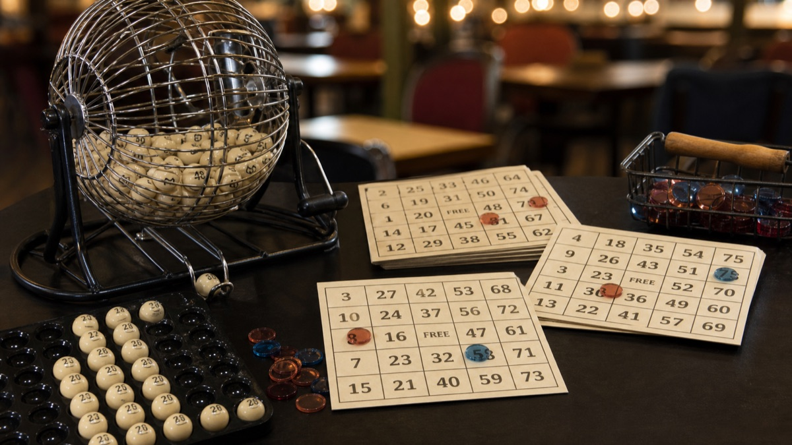

Chancebet non è più operativo: guida e alternative
Il vecchio marchio non opera più come piattaforma separata.

Cerchi il bingo di Chancebet e il sito non si apre? In questa guida ricostruiamo com'era l'offerta bingo dell'operatore: come si giocava, quali bonus e metodi di pagamento c'erano, e cosa fare oggi per restare nella legalità.
Come accedere oggi
- Questa informazione riguarda il servizio storico Chancebet. Le offerte operative disponibili oggi sono raccolte nel confronto della pagina.
- Il vecchio sito Chancebet non è più operativo. Per giocare oggi, confronta le piattaforme attive presentate in questa pagina.
- Per le scommesse e il casinò usa esclusivamente piattaforme operative con condizioni e licenza verificabili.
Il passo successivo è confrontare bonus, pagamenti e requisiti delle piattaforme attive, non cercare un nuovo accesso al vecchio brand.
Cos'è il Bingo online su Chancebet
Chancebet era uno dei marchi italiani del gioco a distanza, gestito da Vittoria Bet 2009 S.r.l. Nel palinsesto, accanto a scommesse sportive, poker e un casinò da quasi 3.000 titoli, il bingo aveva un suo spazio, con sale aperte 24 ore su 24, 7 giorni su 7 .
Il fulcro era il bingo classico a 90 palline — quello più vicino alla tombola italiana — con sale storiche come Italia30 e Zaffiro75 . I nomi non erano casuali: richiamavano le due varianti principali, il formato a 90 numeri e quello a 75. Non mancavano partite veloci e ibridi con le slot, in stile slingo.
Come si gioca a bingo online su Chancebet
Il meccanismo ricalca quello delle sale fisiche, solo più veloce. Nel bingo a 90 palline ogni cartella ha tre righe da cinque numeri, 15 in tutto, estratti da un'urna virtuale che va da 1 a 90. Compri una o più cartelle prima che parta la partita, il sistema segna in automatico i numeri estratti e i premi scattano quando completi le combinazioni.
Le combinazioni vincenti tipiche:
- Cinquina: cinque numeri sulla stessa riga;
- Bingo: tutti i 15 numeri della cartella;
- Jackpot: premio aggiuntivo, fisso o progressivo, che scatta se il bingo arriva entro un certo numero di estrazioni.
Il formato a 75 numeri usa cartelle e schemi di vincita differenti (spesso figure sulla griglia), quindi le regole sopra valgono per il bingo a 90.
Una nota per chi arriva dalla tombola di Natale: online si pagano solo cinquina, bingo e jackpot. Niente ambo, terno o quaterna. Quelli restano roba da tombola tradizionale. Sui costi: in Italia una cartella media vale circa 0,10 €, con un range che di solito va da 0,05 € a 0,50 €, e sale premium che toccano 1 € a cartella. Bastano pochi centesimi per sederti a un tavolo virtuale, ed è qui che sta buona parte del suo successo.
Giochi e sale bingo disponibili su Chancebet
Il cuore dell'offerta erano le due sale di punta, Italia30 e Zaffiro75, sempre accese: giorno e notte trovavi una partita in partenza, con estrazioni cadenzate e chat integrata. La componente social è da sempre uno dei motivi per cui il bingo tiene botta contro slot e casinò live.
A contorno, i jackpot progressivi legati alle sale e i giochi ibridi tipo slingo, che mescolano cartelle e rulli. Fuori dal bingo, il catalogo casinò contava quasi 3.000 giochi con provider come NetEnt ed Espresso : slot, roulette, blackjack, baccarat, poker, keno e gratta e vinci. In alternativa, il mercato ADM offre altri operatori con sezioni bingo strutturate — da SNAI a BetFlag, passando per Domusbet e Stanleybet — che citiamo giusto per completezza.
Bonus e promozioni
Chancebet non seguiva il solito schema del bonus di benvenuto sul primo deposito. Puntava tutto sul cashback: un rimborso calcolato sulla differenza tra giocato e vinto, con percentuali dal 15% al 25%. I coupon arrivavano il giorno 3 di ogni mese, con un tetto di 750 €.
Le condizioni cambiavano a seconda del prodotto:
- Slot: coupon valido un mese;
- Scommesse sportive: validità di sette giorni, quota minima 2.00 e almeno cinque scommesse piazzate nel mese;
- prelevabili solo le vincite derivanti dai coupon.
Attenzione: questo cashback riguardava slot e scommesse; se e in che misura si applicasse al bingo va verificato con l'operatore, per non farsi aspettative sbagliate. Ci si aggiungevano promozioni stagionali e tornei a tema — le classiche partite speciali di Natale o Pasqua — senza importi fissi garantiti nel tempo.
App e bingo da mobile su Chancebet
Da smartphone e tablet si giocava sia con la versione mobile del sito sia con l'app, compatibile iOS e Android. Le sale si caricavano in fretta anche in dati, le cartelle si compravano in pochi tap e la segnatura automatica dei numeri ti evitava di stare col fiato sospeso a ogni estrazione. Comodo, quando giochi in giro.
Chi aveva l'app Chancebet installata dovrà solo passare alla nuova applicazione o alla versione browser del sito.
Metodi di pagamento, depositi e prelievi
I pagamenti erano uno dei punti forti dell'operatore: tanti metodi e prelievi rapidi, con l'operatore che dichiarava tempi immediati (i tempi reali possono variare a seconda del metodo). Ecco il quadro completo:
| Metodo | Deposito | Prelievo |
|---|---|---|
| Bonifico bancario | ✅ | ✅ |
| Bonifico domiciliato | ❌ | ✅ |
| Skrill | ✅ | ✅ |
| Rapid Transfer | ✅ | ❌ |
| Neteller | ✅ | ✅ |
| PostePay (VirtualPos) | ✅ | ✅ |
| Bollettino Postale | ✅ | ❌ |
| Nuvei | ✅ | ✅ |
| Punto vendita | ❌ | ✅ |
Come sempre in ambito ADM, il primo prelievo passa dalla verifica dell'identità con documento. Non è un ostacolo, è una procedura standard a tutela del giocatore.
Licenza, sicurezza e gioco responsabile
La continuità normativa è il punto chiave del passaggio: la concessione ADM GAD 16046 resta la stessa , intestata a Vittoria Bet 2009 S.r.l. (P.IVA 12027280960). A conferma della solidità, la società vanta le certificazioni ISO 9001:2015, ISO 14001:2015 e ISO 26000 .
Lato tecnico, i dati viaggiano con crittografia SSL, e gli strumenti di gioco responsabile restano a portata di mano nell'area personale: limiti di deposito, autolimitazione, autoesclusione temporanea o permanente. Il gioco è riservato ai maggiorenni (18+), e la casualità delle estrazioni la garantiscono i generatori certificati richiesti dall'Agenzia delle Dogane e dei Monopoli.
Assistenza clienti e canali di contatto
Non usare il vecchio accesso Chancebet né inserire credenziali su domini simili. Scegli una piattaforma attiva dal confronto.
In passato il servizio clienti rispondeva anche via WhatsApp , canale comodo per spedire al volo i documenti di verifica.
Verdetto finale: pro e contro del Bingo Chancebet
Pro:
- sale bingo storiche attive 24/7 con chat integrata;
- cashback mensile fino al 25%, tetto 750 €;
- prelievi rapidi e tanti metodi di pagamento;
- provider di primo livello (NetEnt, Espresso) e quasi 3.000 giochi;
- protezione SSL e certificazioni ISO.
Contro:
- offerta bingo più contenuta rispetto agli specialisti del settore;
- nessun bonus di benvenuto classico, solo lo schema cashback;
- informazioni pubbliche sulle nuove sale ancora scarse.
Tirando le somme: un operatore storico, legato all'Italia (la società ha radici anche a Catania), che ha scelto la continuità invece della chiusura.
FAQ sul Bingo online Chancebet
Perché il sito Chancebet non funziona più?
No.
La licenza ADM è ancora valida? Sì. La concessione GAD 16046 intestata a Vittoria Bet 2009 S.r.l.
Come si gioca al bingo online? Compri cartelle da 15 numeri (tre righe da cinque), aspetti l'estrazione dei numeri da 1 a 90 e vinci con cinquina, bingo ed eventuali jackpot. I numeri li segna il sistema, in automatico.
Esiste una versione gratuita del bingo? Alcuni operatori ADM offrono partite freeroll o giochi gratuiti giornalieri.
Quanto costa una cartella? La media in Italia è intorno a 0,10 €, con sale economiche da 0,05 € e sale premium fino a 1 €.
Come si riscuotono le vincite? Con bonifico, Skrill, Neteller, PostePay o prelievo in punto vendita, dopo la verifica del documento d'identità. L'operatore dichiarava accredito immediato, ma i tempi effettivi dipendono dal metodo scelto.